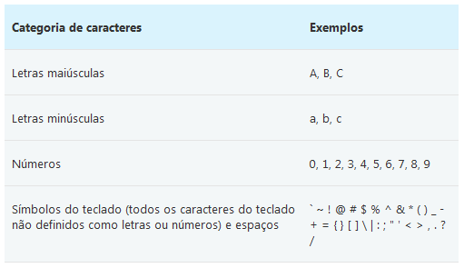

Dicas básicas de segurança(){
Dicas
A todo o momento existem usuários maliciosos na internet, enviando ao maior número de usuários desprevenidos possíveis seus spams, vírus, worms e outros códigos maliciosos, afim de obter qualquer tipo de informação privilegiada.
A segurança da informação se tornou uma preocupação não só das grandes empresas, mas também do usuário doméstico.
Mesmo os usuários mais experientes estão sujeitos a ataques e/ou perda de dados, dada a sofisticação das ferramentas e técnicas utilizadas por esses indivíduos maliciosos ou mesmo um simples acaso.
A seguir, algumas dicas bem básicas para usuários com pouca experiência, de como proceder em determinadas situações do cotidiano de quem utiliza o computador como uma ferramenta de trabalho, pesquisa ou simplesmente entretenimento, visando assim uma proteção maior em relação a possíveis ataques e/ou perdas de dados.
• Não divulgue e nem compartilhe - a senha é sua e de mais ninguém.
• Não escreva em local público ou de fácil acesso.
• Nunca use palavras de dicionários ou dados pessoais como senha.
• Crie senhas com mais de oito caracteres e que misture letras maiúsculas, minúsculas, números e caracteres especiais.
• Mude de senha regularmente, principalmente se utilizar máquinas compartilhadas e/ou administradas por pessoas.
O que torna uma senha forte (ou fraca)?Uma senha forte:
• Tem pelo menos oito caracteres.
• Não contém seu nome de usuário, seu nome real ou o nome da empresa.
• Não contém uma palavra completa.
• É bastante diferente das senhas anteriores.
• Contém caracteres de cada uma destas quatro categorias:

Dica 2 - Recebendo emails.
• Verifique a procedência de emails com anexos duvidosos (de bancos, lojas ou provedores de serviços) observando o cabeçalho completo da mensagem.
• Mesmo que tenha antivírus atualizado, evite abrir arquivos enviados por fontes não confiáveis. Verifique se o remente é mesmo quem ele diz.
• Desconfie muito de arquivos executáveis recebidos (.exe, .bat, .zip), mesmo vindo de fontes confiáveis.
• Verifique a veracidade das informações e use sempre seu bom senso antes de repassar.
• Jamais preencha formulários com seus dados enviados por supostos bancos. Na dúvida entre em contato com seu gerente.
• Tenha sempre um email de filtro para efetuar cadastros na internet. Evite colocar o email que usa frequentemente para trabalho ou amigos.
•Evite fazer cadastros pela Internet, especialmente fornecendo seus dados pessoais, a não ser que seja estritamente necessário.
•Procure não fornecer seus dados pessoais (como nome, e-mail, endereço e números de documentos) para terceiros. Também nunca forneça informações sensíveis (como senhas e números de cartão de crédito), a menos que esteja sendo realizada uma transação (comercial ou financeira) e se tenha certeza da idoneidade da instituição que mantém o site.
•Cuidado aos disponibilizar informações muito pessoais em sites de relacionamento (telefones móveis, endereços residenciais, etc).
• Faça regularmente cópias de reserva (backup) de todos os seus dados importantes. Pense nas coisas que realmente lhe fariam falta caso perdesse tudo e cuide para que isso não aconteça.
• Discos rígidos, pendrives, CDs e DVDs também dão defeito! Tenha sempre mais de uma cópia e não confie em apenas um tipo de mídia de armazenamento.
• Tenha pelo menos um filtro de linha entre seu computador e a rede elétrica, um nobreak seria melhor
• Mantenha seu computador e cabos protegidos contra quedas e esbarrões.
• Mantenha seu computador e suas mídias (como pendrives, CDs e DVDs) em local seco, com temperatura amena, e sempre protegido de fontes eletromagnéticas fortes, tais como celulares, caixas de som e outros.
Referências:
Oficina da Net
Tecno Hall
}